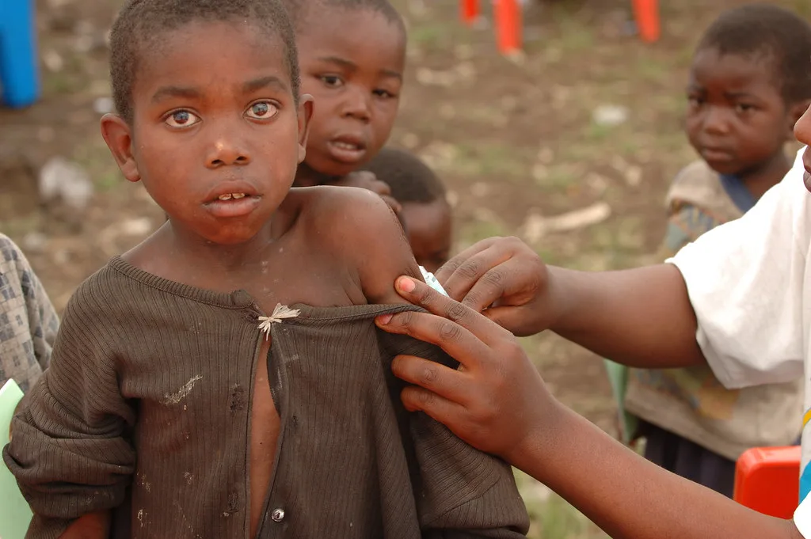
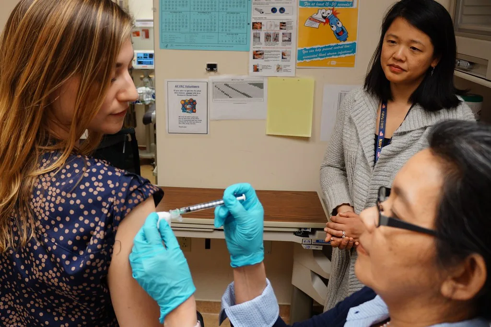

미국이 2000년부터 유지해 온 '홍역 퇴치국' 지위를 잃었다. 세계보건기구(WHO)의 미주 지역 사무소 역할을 하는 범미보건기구(PAHO)가 미국의 홍역 퇴치 인증을 철회하기로 결정했다고 미국 주요 언론이 현지시간 13~14일 일제히 보도했다. 이 소식은 월스트리트저널이 처음 전했고, 심의 내용을 아는 연구자들도 이를 확인했다. 26년 만에 미국이 다시 홍역 상시 유행국으로 분류되는 셈이다. 미국은 한때 홍역을 사실상 몰아낸 대표적 사례로 꼽혔던 만큼 상징적 충격이 크다.
PAHO 기준에 따르면 한 나라 안에서 같은 계통의 홍역 바이러스가 12개월 넘게 끊이지 않고 전파되면 퇴치 지위를 잃게 된다. PAHO는 미국 질병통제예방센터(CDC)의 분석과 독립적인 홍역 전문가 그룹의 분석, 두 가지를 근거로 판단을 내렸다. 미국 내 감염 사슬이 1년 이상 이어졌다는 결론에 이른 것이다. 퇴치 지위는 명예의 문제를 넘어 한 나라의 방역 체계가 제대로 작동하고 있는지를 보여주는 지표로 여겨진다.

올해 미국의 홍역 확산세는 수치로도 뚜렷하다. 보도에 따라 차이는 있지만 2026년 들어 확진자는 5000명을 넘어선 것으로 집계돼, 지난해 한 해 전체 확진자의 두 배를 웃돈다. 홍역 관련 사망자도 잇따라 보고되고 있다. 백신 접종률이 낮은 지역 공동체를 중심으로 집단 발병이 번졌고, 한번 퍼진 감염이 좀처럼 잦아들지 않았다는 분석이 나온다. 사망자 수 역시 매체마다 집계 시점에 따라 다르게 전해지고 있다.
미국만의 일은 아니다. 앞서 캐나다와 스페인, 영국도 전문가 검토를 거쳐 홍역 퇴치 지위를 잃었다. 미국은 WHO에서는 탈퇴했지만 미주 지역 기구인 PAHO 회원국 자격은 유지하고 있어 이번 평가 대상이 됐다. 선진국에서 잇따라 퇴치 지위가 흔들리면서 세계적인 홍역 재유행에 대한 경각심도 높아지고 있다.
홍역은 전염력이 매우 강한 바이러스 질환이다. 고열과 기침, 온몸에 번지는 발진이 대표 증상이며, 영유아나 면역력이 약한 사람에게는 폐렴이나 뇌염 같은 심각한 합병증을 일으킬 수 있다. 공기를 통해 퍼지기 때문에 면역이 없는 사람이 환자와 같은 공간에 있으면 감염될 가능성이 크다. 그래서 집단 면역을 유지하려면 높은 예방접종률이 필수로 꼽힌다. 홍역 예방에는 MMR(홍역·볼거리·풍진) 백신이 쓰이며, 두 차례 접종을 마치면 높은 예방 효과를 얻을 수 있는 것으로 알려져 있다.

퇴치 지위를 되찾는 길도 정해져 있다. 전파를 완전히 끊은 뒤 최소 12개월 동안 유행 없이 지내야 다시 퇴치국으로 인정받을 수 있다. 보건 전문가들은 접종률이 떨어진 지역의 예방접종을 끌어올리는 것이 가장 시급하다고 지적한다. 백신에 대한 불신을 해소하고 정확한 정보를 전달하는 일이 방역의 성패를 가를 것이라는 전망이 나온다. 지역 보건소와 학교를 연계한 접종 캠페인도 대안으로 거론된다.
우리나라에서도 해외 유입 홍역 사례가 꾸준히 보고되고 있어 남의 일로만 볼 수 없다. 미국 등 홍역 유행 국가를 여행하거나 방문할 계획이 있다면 출국 전에 예방접종 이력을 확인하는 것이 좋다. 귀국 후 발열과 발진이 나타나면 의료기관을 찾기 전에 먼저 보건당국에 문의해 안내를 받는 것이 안전하다. 미국 보건당국이 확산세를 언제쯤 꺾을 수 있을지 주목된다.